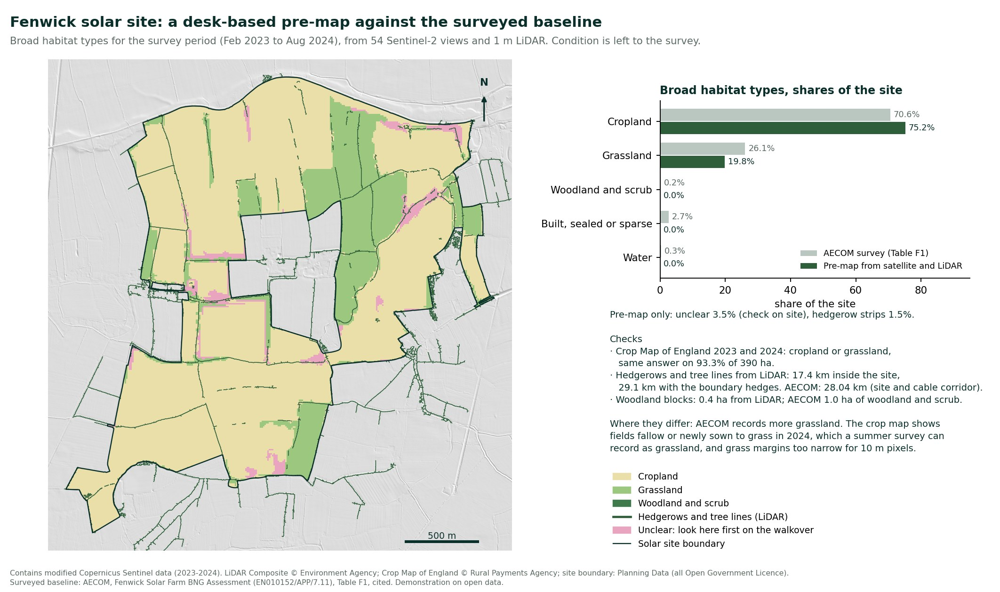
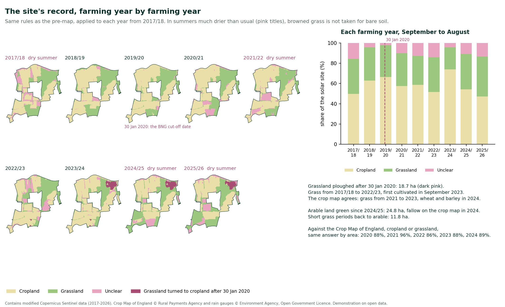
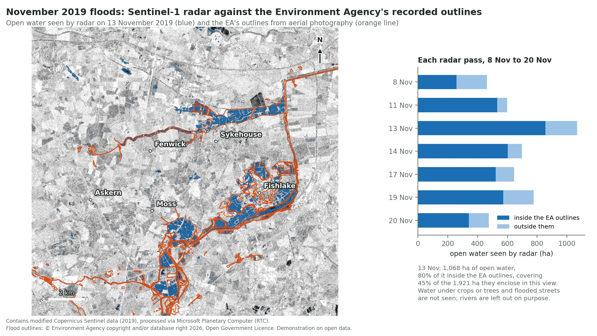
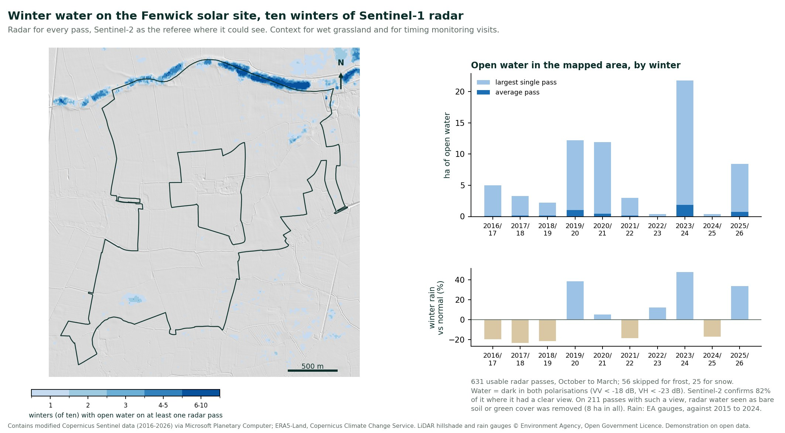
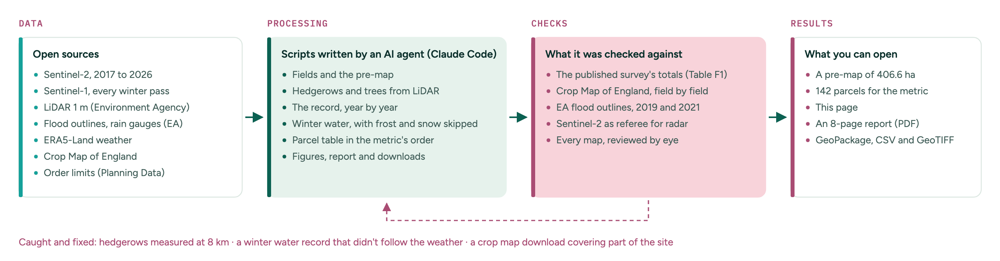

Fenwick Solar Farm, near Doncaster: a habitat pre-map from open satellite data and LiDAR, made without a site visit and compared with the ecologists' published survey.

The pre-map against the published survey.
Under the metric, land degraded after 30 January 2020 takes its earlier habitat as the baseline. The Crop Map of England shows grass on these fields in 2021, 2022 and 2023, and cereals in 2024.

The record, farming year by farming year.
80% of the open water radar saw on 13 November lies inside the outlines drawn from aerial photography.

The first flood check: November 2019.
Most of it along the River Went, and wetter winters hold more: 82% of what radar calls water is confirmed as water on Sentinel-2 views taken within two days.

Ten winters of radar, with Sentinel-2 as the referee.
How it was made: the question, data, method, checks and limits
Fenwick Solar Farm, north of Doncaster, was consented in February 2026. Before the application, ecologists surveyed it from February 2023 to August 2024 for its biodiversity net gain assessment, and published the baseline: about 71% cropland and 26% grassland, with 28 km of hedgerows.
How much of that could open satellite data and LiDAR have anticipated before anyone went on site? And what can the record of past years, floods and weather add that a single survey can't?
A biodiversity net gain baseline starts with a habitat map, and for a large site it takes weeks of survey. A desk-based pre-map can show the ecologist where the common habitats are, where to look first, and what has changed on the land before the survey date, which matters: where habitat was degraded after 30 January 2020, the baseline has to be the habitat before the change.
Fenwick was chosen because its baseline is published, recent and made with the statutory metric. Biodiversity net gain has been mandatory for nationally significant infrastructure projects since 2 November 2026.
For the monitoring side, on a solar park that is already built, see the Cleve Hill sample.
| Source | Used for | Licence |
|---|---|---|
| Sentinel-2, 2017 to 2026 (54 views for the survey period) | The pre-map and the yearly record | Copernicus free and open |
| Sentinel-1, every winter pass 2016 to 2026 | Open water through cloud | Copernicus free and open |
| LiDAR Composite, 1 m (Environment Agency) | Hedgerows, trees, woodland, roofs | Open Government Licence |
| Recorded Flood Outlines (Environment Agency) | Checking the radar flood maps | Open Government Licence |
| Rain gauges at South Elmsall, Nutwell and Dirtness (Environment Agency) | Rainfall, wet and dry seasons | Open Government Licence |
| ERA5-Land (Copernicus Climate Change Service) | Temperature, snow and frost at the time of each radar pass | Copernicus licence |
| Crop Map of England 2020 to 2024 (Rural Payments Agency) | Second opinion on cropland and grassland | Open Government Licence |
| Order limits (Planning Data platform) | The site boundary | Open Government Licence |
| Fenwick Solar Farm BNG Assessment (AECOM, 2024), Table F1 | The surveyed baseline, for comparison | Published planning document, cited and not reproduced |
Accuracy is reported for this site only. Without the survey's own map, which is not open, the comparison is with its published totals, plus an independent second opinion field by field.
| Check | Result |
|---|---|
| Broad habitats against the survey's totals | Cropland 75.2% (survey 70.6%), grassland 19.8% (26.1%), unclear 3.5% |
| Crop Map of England 2023 and 2024 | Same answer, cropland or grassland, on 93.3% of 390 ha |
| Hedgerows and tree lines | 17.4 km inside the site, 29.1 km with the boundary hedges; survey 28.04 km (site and cable corridor) |
| Woodland | 0.4 ha of woodland blocks; survey 1.0 ha of woodland and scrub |
| Floods of November 2019 | 80% of the open water radar saw on 13 November lies inside the EA's outlines from aerial photography |
| Winter water record against Sentinel-2 (clear views within two days) | 82% of the radar's water confirmed as water. The first version: 9%, because it took green crops and grass for water |
| Storm Christoph, January 2021 | Half of the EA's outlines seen as water on 22 January. Radar also shows the River Went's floodplain flooded, as in 2019, where the EA drew no outline for this storm |
| The yearly record against the Crop Map of England, 2020 to 2024 | Same answer by area: 88% (2020), 96% (2021), 86% (2022), 88% (2023), 89% (2024) |
Where the pre-map and the survey differ, the survey has more grassland. The Crop Map of England shows fields left fallow or sown to temporary grass in 2024, which a summer survey can record as grassland, and grass margins narrower than 10 m are missed by the pre-map.

An agent (Claude Code) wrote the scripts: downloads from the open services, the pre-map and parcels, the LiDAR measurements, the flood checks, the figures and the table. Every result on this page was checked against something independent: the published survey totals, the Crop Map of England, and the Environment Agency's flood outlines.
What it got wrong, and what caught it: the first hedgerow measurement treated the trees in the hedges as woodland and found 8 km; the survey's 28 km showed something was missing. The first winter water record didn't follow the weather: the dry winter 2018/19 came out wettest. Sentinel-2 views taken within two days of the radar showed that 83% of what radar called water was green crops and grass. With both radar polarisations and Sentinel-2 as the referee, 82% of the radar's water is now confirmed as water. And the first crop map download covered only part of the site, until a gap in the history check showed it.
Own outputs and open data only, with every source and licence named inside. Nothing from the survey's plan is included.
If you have an upcoming site where a pre-map, a 2020 cut-off check, or a statutory metric baseline table would save your field team time, email me at ana@timebooster.ai.